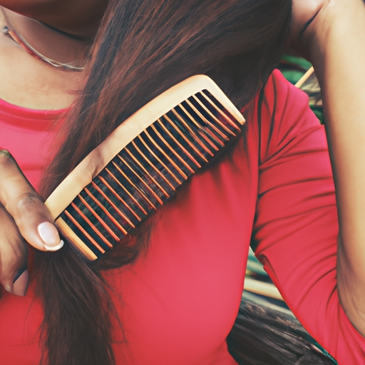
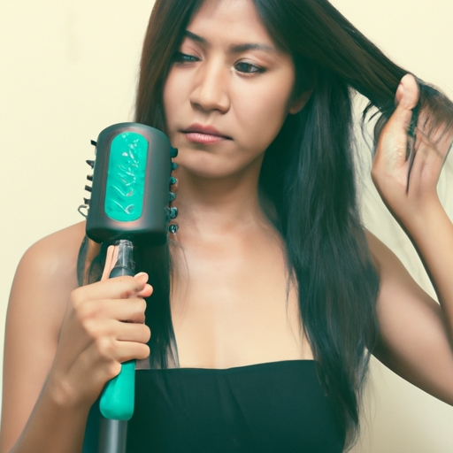
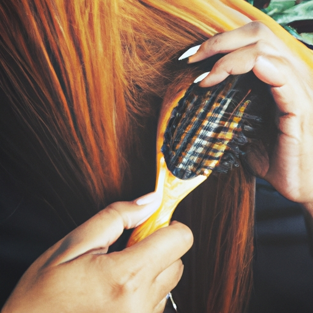
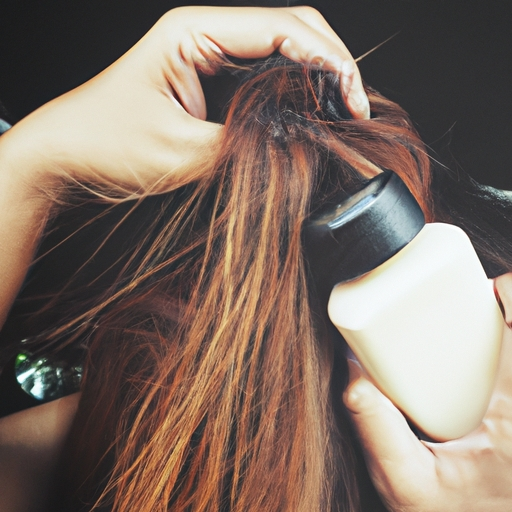
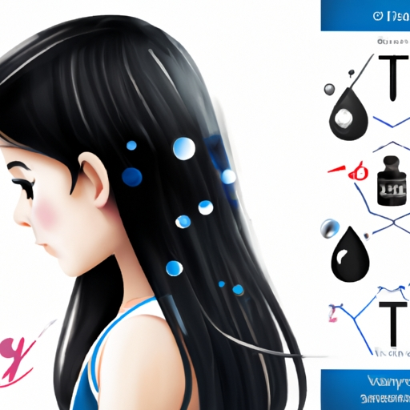
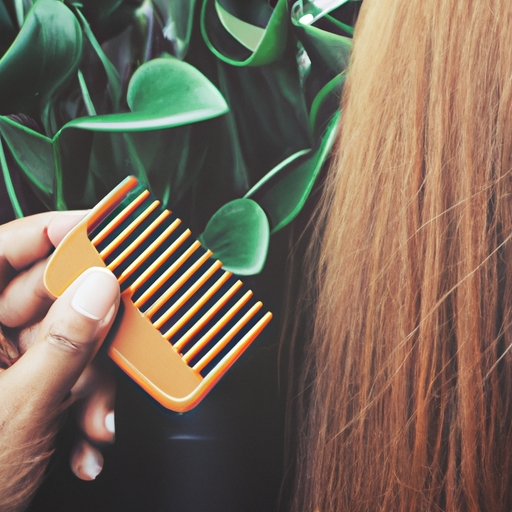
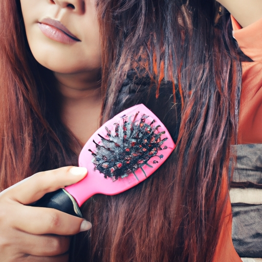

News
Hair care tips
Hair care tips
Frequency of Washing
Choosing the Right Shampoo and Conditioner
Proper Rinsing and Drying Methods
Hair Maintenance and Health
Hair Maintenance and Health
Preventing Hair Damage
Scalp Care
Tips for Different Hair Types eg curly straight oily
Styling Tips and Tools
Styling Tips and Tools
Heat Protection Strategies
Usage of Styling Products
Best Practices for Using Styling Tools eg flat irons curlers

Best Ingredients for Healthy Hair
Sep 24, 2024
Healthy hair is often considered a hallmark of beauty and vitality.. It frames our face, enhances our appearance, and can significantly boost our confidence.

Hair Care Routines for Different Hair Types
Sep 24, 2024
Hair Care Routines for Different Hair Types Hair is a defining feature of our appearance, playing a crucial role in how we present ourselves to the world.. However, not all hair is created equal.

Hair Washing and Conditioning Tips
Sep 24, 2024
Hair Washing and Conditioning Tips Maintaining healthy, vibrant hair is a goal many of us strive for, yet it can often feel like an elusive dream.. With so many products and techniques touted as the "ultimate solution," it's easy to get overwhelmed.

How to Achieve Salon-Worthy Hair at Home: Secrets Revealed
Sep 24, 2024
Achieving Salon-Worthy Hair at Home: Secrets Revealed Everyone loves that fresh-from-the-salon look — the silky, shiny hair that seems to bounce with every step.. But frequent salon visits can be time-consuming and expensive.

How to Get Rid of Dandruff for Good with These Expert Tips
Sep 24, 2024
Dandruff is one of those seemingly small issues that can cause a significant amount of discomfort and embarrassment.. If you've ever found yourself brushing white flakes off your shoulders or scratching your scalp incessantly, you're not alone.
How to Keep Your Hair Shiny and Healthy Without Expensive Products
Sep 24, 2024
Keeping your hair shiny and healthy doesn't have to break the bank.. With a few simple, cost-effective habits and natural remedies, you can maintain gorgeous locks without relying on pricey products.

How to Make Your Hair Grow Faster: Proven Methods You Need to Try
Sep 24, 2024
Title: How to Make Your Hair Grow Faster: Proven Methods You Need to Try Hair is often considered one of our most defining features.. Whether you are yearning for cascading locks or simply want to improve the health and length of your hair, understanding how to stimulate faster growth can be a game-changer.
How to Master the Art of Perfect Curls: A Step-by-Step Guide
Sep 24, 2024
How to Master the Art of Perfect Curls: A Step-by-Step Guide There is something undeniably alluring about a head full of perfectly curled hair.. Whether you're aiming for loose beach waves or tight ringlets, mastering the art of curling can elevate your look from ordinary to extraordinary.
How to Stop Hair Fall Instantly Using This One Ingredient
Sep 24, 2024
Hair fall is a concern that touches millions of lives across the globe.. It doesn't discriminate between age, gender, or background; it just happens, often leaving those affected in a state of distress and searching for solutions.

How to Transform Your Hair Overnight with These Simple Tricks
Sep 24, 2024
Transforming your hair overnight may sound like a fantasy, but with some simple tricks, it can become your reality.. Whether you’re aiming for luscious curls, sleek straight locks, or just an overall healthier look, there are numerous ways to achieve your dream hair while you sleep.
Natural Remedies for Common Hair Problems
Sep 24, 2024
Natural Remedies for Common Hair Problems Hair is often considered our crowning glory, and it’s no wonder that everyone wants to flaunt healthy, luscious locks.. However, achieving and maintaining beautiful hair can be a struggle due to various common hair problems such as dandruff, hair fall, split ends, and dryness.
Seasonal Hair Care Advice
Sep 24, 2024
Seasonal Hair Care Advice As the seasons change, so too does the environment around us, and with it, our hair’s needs.. The transition from one season to another can be harsh on our tresses, requiring us to adjust our hair care routines accordingly.
Tips for Preventing and Treating Hair Damage
Sep 24, 2024
Tips for Preventing and Treating Hair Damage Hair, often considered our crowning glory, plays a significant role in our overall appearance and self-esteem.. Yet, it's astonishing how easily it can become damaged.
What is Scalp Exfoliation and Why Should You Consider It?
Sep 24, 2024
Scalp Exfoliation: The Key to Healthier Hair When it comes to beauty and personal care, the scalp often gets neglected.. We spend a tremendous amount of time and money on skincare routines, hair treatments, and other grooming practices but rarely do we consider the health of our scalp.
What is a Deep Conditioning Treatment and How Can It Benefit Your Hair?
Sep 24, 2024
Deep conditioning treatments are a cherished secret in the world of hair care, often hailed as the ultimate remedy for dry, damaged, or frizzy locks.. These treatments go beyond the surface level to rejuvenate and restore hair from within.
What is the Best Way to Prevent Hair Breakage?
Sep 24, 2024
Hair breakage is a common concern for many people, regardless of hair type or length.. It can be frustrating to see your hair looking dull and damaged despite your best efforts to maintain it.
What is the Difference Between Sulfate-Free and Regular Shampoos?
Sep 24, 2024
When it comes to choosing the right shampoo, the array of options available on store shelves can be overwhelming.. Among these choices, one distinction that often catches the eye is whether a shampoo is sulfate-free or not.
What is the Effect of Heat Styling on Hair Health?
Sep 24, 2024
Hair has long been a symbol of beauty and identity, with countless individuals investing time and resources to enhance its appearance.. Among the many methods employed to style hair, heat styling stands out due to its ability to quickly transform hair’s texture and shape.
What is the Ideal Frequency for Washing Your Hair?
Sep 24, 2024
What is the Ideal Frequency for Washing Your Hair? The quest for the ideal frequency to wash one's hair is a universal dilemma that transcends borders, cultures, and genders.. It's a topic of conversation in social gatherings, an element of countless beauty routines, and a subject heavily debated among dermatologists and hairstylists alike.
What is the Role of Nutrition in Maintaining Healthy Hair?
Sep 24, 2024
The Role of Nutrition in Maintaining Healthy Hair When it comes to the quest for luscious, healthy hair, many of us turn to a plethora of shampoos, conditioners, and treatments.. While these products can certainly help maintain and enhance the appearance of our tresses, they often overlook one of the most fundamental aspects of hair health: nutrition.